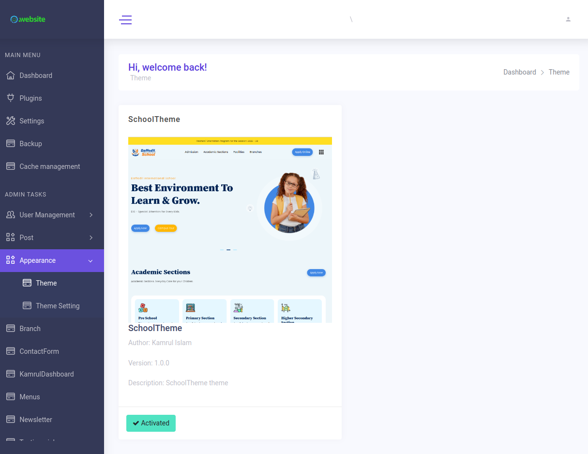

Rename theme
Sometimes, you want to rename our existing theme to hide info from us or just want to customize our theme and prevent losing your changes when upgrading to the new version.
Using Rename theme
There are some ways to change it:
1. Change theme’s name directly.
By this way, you can’t upgrade theme source code in themes anymore,
you will need to handle it by yourself.
1.1 Using command line
If you can run command line. It’s so easy to do.
Delete folder /vendor and run composer install to re-install vendor packages.
Run command:
php artisan kamrul:theme:rename [current-name] [new-name]
Ex:
php artisan kamrul:theme:rename my shop
Change your theme info in
themes/[new-name]/theme.json.
2. Change public theme name only
By this way, you still keep update from us, it just changes theme
info in public places, theme in themes/[current-theme-name] still be
updated when upgrading using System Updater.
Rename folder
public/[current-theme-name]topublic/[new-name].Add to .env
KAMRUL_THEME_PUBLIC_NAME=new-name
Copy file themes/[current-theme-name]/theme.json to public/[new-name]/theme.json then
change to your theme info.